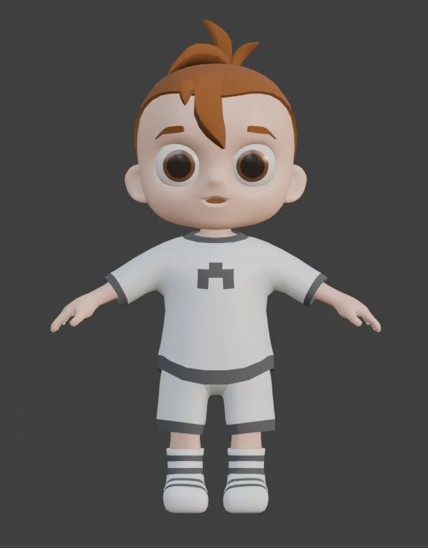

NORMALA familiar aquarium

GRADUATION PROJECT · SOLO PROJECT · 6 MONTHS
BEDTIME
IS A LIE
A familiar childhood bedroom. A place that should feel safe. Until the lights go out.
UNREAL ENGINE 5PARANORMAL HORROR2026
THE PROJECT
Comfort and fear
in the same room.
Bedtime Is A Lie is a first person paranormal horror game developed as my graduation project over six months. The entire project was created solo, from concept and visual direction to assets, interface design and implementation.
CORE IDEA
Childhood comfort.
Childhood fear.
The concept is built around a simple contradiction. A colorful bedroom filled with familiar toys and memories becomes unsettling after dark. Darkness, isolation, shadows, sudden sounds and uncertainty transform the meaning of a space that was designed to feel safe.

COMFORT
The room in daylight
ENVIRONMENT DESIGN
A room built
to be explored.
The bedroom is divided into recognizable areas for sleeping, playing, dressing and relaxing. Each space has a purpose, while furniture and walls deliberately interrupt sightlines to create curiosity and tension about what might be hidden beyond them.

ROOM TURNAROUND
One location.
Many readings.
Keeping the game in a single room made every sightline, landmark and prop more important. The space needed to remain readable while still offering enough visual obstruction for horror to work.
EARLY IDEATION
Planning the
play space.
Only a small amount of early documentation survived, so the process is shown honestly rather than reconstructed. These sketches capture the initial thinking around zones, movement and room composition.


PARANORMAL ACTIVITY
Familiar objects.
Wrong somehow.
The player learns the room in its normal state, then searches for changes. This turns ordinary props into gameplay information and lets the horror emerge from observation rather than relying only on direct threats.
PARANORMALSomething has changed

VISUAL HORROR
Hide information.
Build anticipation.
SELECTED 3D ASSETS
Details that make
the room personal.
The environment is populated with stylized props designed specifically for the project. Rather than showing every asset, this selection focuses on pieces that contribute most to the identity of the room.
Teddy
Stylized Toy
Closet
Environment Furniture
Toy Train
Stylized Toy
CHARACTER
Designed to belong
to the same world.
The child character follows the same rounded, stylized visual language as the bedroom and its props.

INTERACTION & UI
Keep the interface
inside the world.
UI is kept selective in this case study. The note interaction is shown because it supports the childlike setting and communicates objectives without pulling attention away from the environment.

NOTE INTERACTION
Simple, readable,
thematically grounded.
Handwritten notes deliver tasks and context while maintaining the visual language of a child's bedroom.
THE EXPERIENCE
See it
in motion.
The final trailer brings the environment, paranormal activity and atmosphere together as one complete playable experience.
FINAL GALLERY
Selected
moments.


CONTACT
Interested in
my work?
I am open to opportunities in game art, 3D art, environment art and UI focused roles.